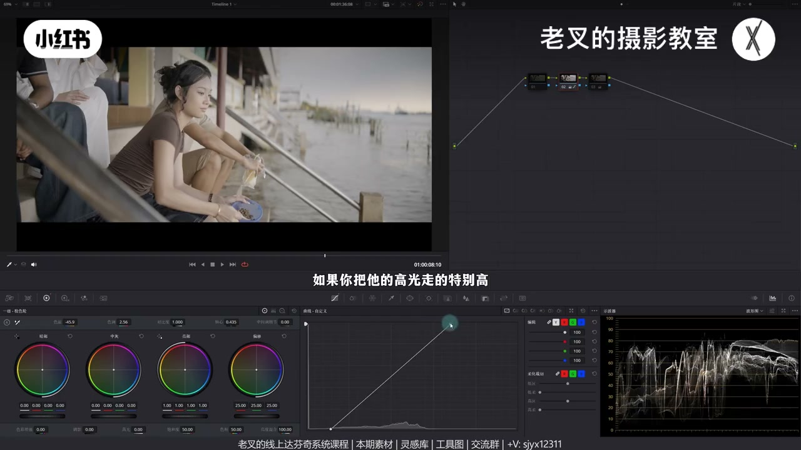
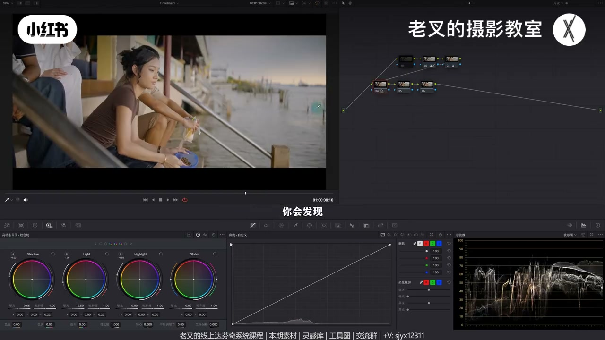
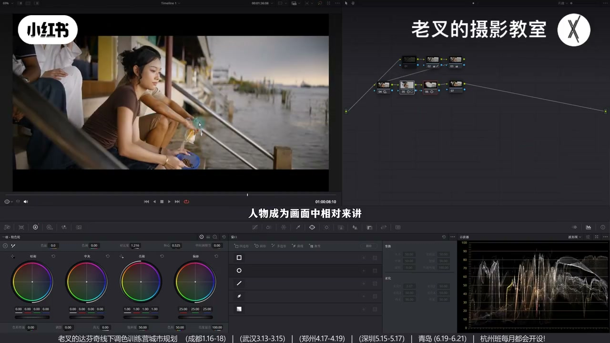
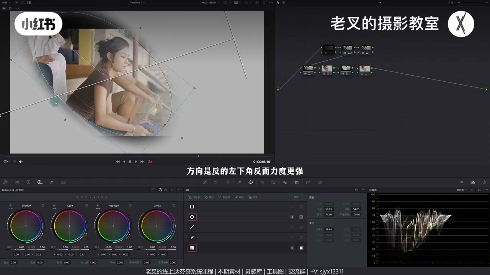
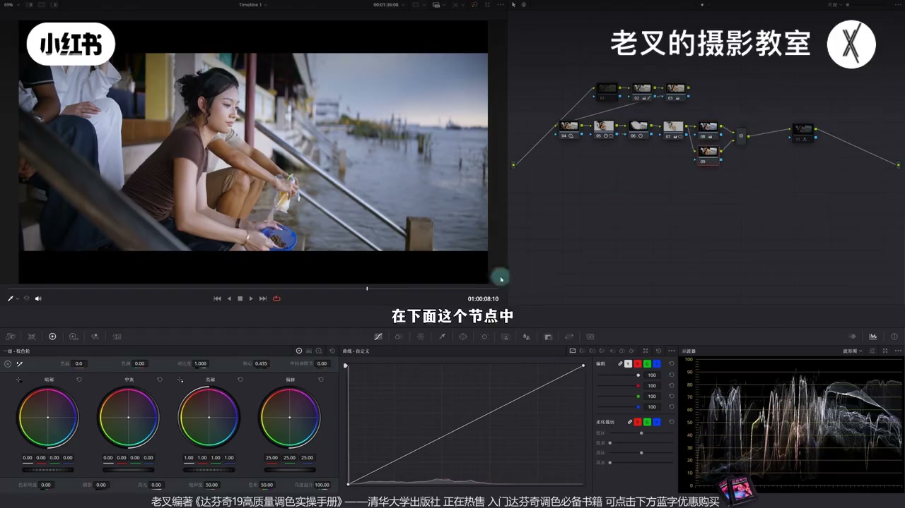
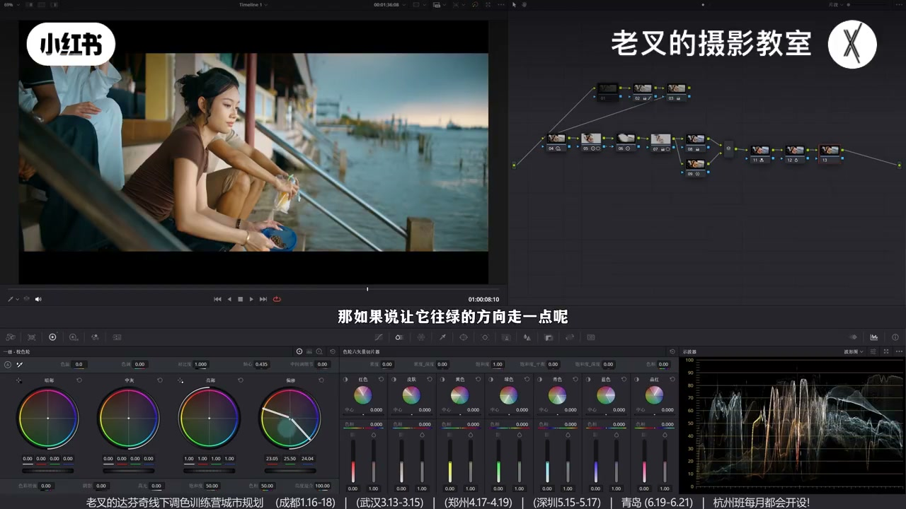

内容要点
朋友觉得灰片好看一调却成坨。老叉演示完整思考链：傍晚还原受光勿硬拉到90%；影调按夕阳大光比——压中灰让更多内容靠暗，再抬 Highlight 回光感；主体用对比+外部压环境；还要更亮时用圆形与渐变遮罩差集按光衰减提中灰。颜色先看清冷暖，加蓝并行保暖再 RGB 混合器出青橙，切片压艳蓝；外观创造器必须建在曝光与颜色之上。
知识结构
傍晚有夕阳余光：受光面<80%，校正白平衡+饱和；别硬拉90%。
压 Shadow/Light 让内容靠暗；抬 Highlight 回脸光感与层次。
人物遮罩加对比+轴心微提；外部压四周，力度勿假。
圆∩渐变差集局部提中灰，符合光方向衰减，胜于整脸猛抬 Light。
加饱和看清冷暖→加蓝保暖→RGB 青橙→压艳蓝；外观须有曝光+颜色底座。
质感来自符合时间与光的影调，以及主体主次，而不是堆节点。更亮要问「亮的是哪」——受光与光衰减。颜色先让冷暖合理再谈倾向；强力外观工具不能代替前期思考。
00:00-00:55还原思考：傍晚不要做太亮
灰片好看但一调成坨。先看拍摄时间：远处有一小抹夕阳，时间偏晚，还原不要太亮——人物受光面在80%以下即可；硬拉到约90%不符合真实。校正白平衡并略加饱和。
还原后仍可不好看：整体太平，像手机拍。

00:55-02:01影调：夕阳是柔和高光的大光比
傍晚最好看的影调是高光柔和的大光比：背光将入夜故暗面较暗，太阳落山高光不强。做法不是把暗面曝光再往下砸，而是让更多内容往暗面靠——降 Shadow，可微降 Light（二者覆盖中灰）。
高光易牺牲过多、脸失光感，再略抬 Highlight 找回，脸上有亮有暗有灰面。

02:01-03:02主体：对比度组合让人相对最亮
视频要突出主体否则乱。人物遮罩内加对比变立体，配合轴心略提亮（勿过多防过曝）；Alt/Option+O 外部对其余同样用对比+轴心略压暗，力度过猛会假。
两节点后人物相对更亮更立体，但若仍不够亮，加对比或猛移轴心都会有副作用（暗更暗或中灰发灰、高光溢出）。

03:02-05:09符合光衰减：渐变与圆遮罩差集
只要受光面更亮。整选人物抬 Light 有效但不舒服——力度不符光衰减，连带他人体量过强。应用渐变跟光方向（右上→左下），再与人物圆遮罩做差集：减圆外渐变（点渐变的差集按钮），方向反了再反转，使渐变只作用在圆内。
范围内略提中灰曝光，圆可再收小。三人节点前后对比：人物按光衰减被提亮。素材可分享平台领取。

05:09-07:28颜色思考：看清→补蓝→青橙→压艳
对颜色不敏感时可临时加满饱和看清有谁：水天淡蓝、人物与夕阳暖——考虑青橙。RGB 混合器增红降蓝出橙，但蓝/青不够因为原片缺蓝。
前插降温加蓝，并行找回肤暖，再开混合器才有青有暖。蓝过艳则切片增蓝青密度并略降饱和，喜欢淡灰蓝即可；肤可增密度做高反差或略降饱和。

07:28-09:14全局倾向与外观：必须先有底座
颜色有了但全局倾向不够：在橙与青蓝之间用偏移偏黄或偏绿都可。也可上电影感外观创造器，再降对比、护高光、微调白平衡色调。
关掉前面节点只留外观：还原当时尚可，现在不行。只开曝光：影调好但颜色寡淡。故须先把颜色做出来。外观是加成不是替代。

完整转录（74段）
以下文本由 Whisper medium 模型自动转录，可能存在少量识别误差，已尽可能修正。
前两天我有朋友给我发了这个素材 她说是往上找的 看着灰片她就觉得好好看 但是她一条就变成了一坨
那么我就借着这个素材给大家分享一下 在调色过程中我们该怎么去思考 首先呢是还原的思考 还原我们还是要做到位的
做到位指的是什么呢 我们看这个画面 它是什么时间点拍的 其实我们从灰片就能大概看得出来 时间还是比较晚的
这里远处有一小抹夕阳 那既然时间比较晚 我们在还原的时候就不要做太亮 差不多曲线给它拉到这个程度 也就是画面中最亮的部分
或者说人物它的受光面在80以下就行了 如果你把它的高光走的特别高 你说高光就要90%左右的话 那你肯定太亮了 不符合真实情况 所以这就不对
我们大概做到这个程度就行了 当然我还校正了一下白平衡 然后再给它加一点饱和度 此时我们虽然还原好了 但是不好看 哪里不好看
我觉得画面整体太平了 你像手机拍的感觉 那我们又可以思考一下 夕阳傍晚的时候 它最好看的质感 或者说它的影调关系应该是怎么样的
它的影调应该是高光柔和的大光比画面 因为背光面马上要进入到晚上了 所以它的暗面会比较暗 同时它的高光不会那么强 因为太阳已落山了
那对于这两个效果 我们一个个来建立几个节点 拉到第二排 先降低中灰部分的曝光 虽然我们刚刚说暗面会比较暗 但不是让它的暗面曝光往下降 而是让更多的内容往暗面去靠
所以我们要降低HDR色轮中 Shadow色轮的曝光 也可以小幅降低点Light色轮的曝光 因为这两个色轮都覆盖了中灰部分的曝光 我们让它往下压
你会发现 降低了中灰部分 也就是让更多的内容往暗部去走了之后 整个画面更符合夕阳的感觉 对不对 但是这样做会让高光牺牲太多 比如说人物脸上的这个光 它都没有光感了
所以我们可以再稍微提高一点Highlight色轮的曝光 大概到这个程度 让它脸上的光感再回来 我们看到经过这样的调整 人物脸上的层次是不是就多了 对吧
有亮有暗还有灰面 那还没完啊 对于一个视频调色 我们肯定要突出主体的 否则你画面就乱成一片没有主次 这个画面中主体自然就是人
所以我们在后面这个节点给人物大概画一个遮罩 大概是这个范围 对于这个遮罩内的内容 我希望人物能够变得立体一点 同时它能够成为画面中相对来讲比较亮的那一个
所以我们可以利用对比度和轴心的组合 先加一点对比度来让它变得更加立体
然后再配合轴心让它再亮一点 稍微亮一点点就行了 这个亮不了太多 亮太多高光会过曝
然后我们可以按住Alt加O或者是Option加O建立一个Wipe节点 也就是选择其余部分的内容 也可以利用对比度配合轴心的方式来让四周能够稍微暗一点
同样也不要让它按的太多 你按成这样的话 这不就太假了吗 对吧
所以我们稍微给它压一点点 大概到这个程度就差不多 那我们可以把这两个节点开关下看
是不是画面整体变得立体的 同时人物成为画面中相对来讲比较亮的那一部分 但是我觉得还不够啊
这个时候如果你想让人物再亮一点 你回到5号节点 你给它 如果说你是增加对比度 那肯定是不行的 对吧
亮面确实会变亮 但是暗面会变得更暗 那如果说我们离动轴心让它更亮的话也不行 因为它的中灰部分也会提亮
所以就会让它有点发挥 而且高光容易溢出 那我们该怎么去做呢 我们想一想 我们要让人物更亮 亮的是什么
其实只是让它的受光面更亮 对吧 其他地方我们可以不用动它 那既然是这样子的话 我们是再来一个节点把人物选中
然后提高light色轮的曝光吗 有效果 但不是很舒服 为什么呀 因为这样的体量它并不符合光衰减的一个情况
这会导致其他三位他们身上的体量力度也太强了 其实这个时候我们可以利用遮罩的差极来进行 要符合光衰减
那我们第一个想到的遮罩是谁 不就是渐变的遮罩吗 对吧 我们找到光的方向 它肯定是从右上往左下走的
但是我们用了渐变遮罩之后 它的范围是这么大的一个范围 我们只是想让它作用在人物身上 那自然就要再建立一个圆形遮罩
就是我们刚刚这个遮罩 那目前我们两个遮的选区是交集 我们要让渐变遮罩只作用在圆形遮罩的范围内
所以我们要减去圆形遮罩以外范围的渐变遮罩 对吧 那每个遮罩的右侧都有两个按钮 左边也就是第一个按钮是反转
右边这个按钮是叉戟 谁被减去就选谁的叉戟按钮 此时我们要减去的是圆形遮罩范围以外的渐变遮罩
所以渐变遮罩被减去 那么我们就可以选择渐变遮罩右边第二个按钮 此时你看渐变遮罩的效果就只作用在圆形遮罩内了 对不对
但是你会发现方向是反的 对吧 方向是反的 左下角反而力度更强 所以这时候我们再给它点个反转
那此时我们就可以只针对在圆形遮罩范围内做一个渐变遮罩的效果了
那对于这个范围我觉得可以稍微给它提高一点中灰色蓝的曝光 稍微提高一点就行了 圆形遮罩范围可以再小一点
好 大概是这个效果 我们看到人物这一次他就被符合光衰减的体量了 对不对 那这三个节点的操作我们来看一下前后变化
是不是人物更加突出了 这期素材也是作者在国外的一个素材网站上下载下来的
所以大家也可以来线上分享平台去领取 只要不上用就行了 看视频下方小子来找我 还要打分解线上系统课程和线下调色训练营
那接下来我们就可以看颜色 颜色要怎么考虑 我们先观察这个画面中颜色有谁
那如果说你对颜色没有那么敏感的话 其实你在看颜色的时候可以给它加点饱和度 多加点 加满都行
我们不是为了要这个效果 而是为了看清楚画面中颜色有谁 有谁呢 一个是水和天淡淡的蓝
另一个就是人物和远处这个夕阳它的暖 有冷有暖 我们肯定会考虑来个青橙色调
而青橙色调最快的建立方式就是利用RGB混合器 我们可以增加红色输出中红色通道的数值
然后降低蓝色通道的数值 大概是这样的结果 我们看到此时画面中橙色是有的 但是蓝色不够 也是青色不够
为什么呀 因为原本的画面中蓝色就不够 那该怎么办呢 我们可以把这个往后移 在前面建立一个节点
既然画面中缺蓝 我们就给它加蓝呗 给它用色温往左边移动一点 让它增加更多的蓝色
好 大概到这个程度 蓝色都有了 此时暖色没了 对吧
现在我们可以再按住Alt加P或者是Option加P 建立一个并行节点
在下面这个节点中把肤色这种暖色的部分 它的饱和度给它加回来 大概到这个程度
我们来看这两个节点的操作变化 是不是暖的依旧保留 但是画面中增加更多的冷色了 而且这个冷色是合理的冷色
那在这个时候有冷有暖了 我们就可以再打开刚刚2Gb混合器的这个节点
我们来看画面中是不是出现了这个青色 暖色当然也是有的 对吧
此时画面中我们只能说想要的颜色有了 但它并不好看 哪里不好看 蓝色太艳丽了 一般来讲蓝色不要那么艳丽
所以我们可以再来一个节点 在色冷60辆切片器中我们可以把蓝色和青色的密度给它增加一点
同时小幅降低点青色和蓝色的饱和度 降到你认为舒服的程度就行了
我个人会喜欢比较淡的发灰的蓝 大概到这个程度就挺好的 让它不要那么艳丽
同时如果你喜欢那种高反差的肤色 东南亚那种感觉 你也可以给它在皮肤这个切片中增加一点它的密度
你看到它能够呈现出这种感觉 也挺好的 当然你不喜欢就算了 也可以稍微给它降低点皮肤的饱和度
让它颜色不要那么浓 我觉得到这个程度就挺好的 我们可以看看这个颜色调整前后的变化
是不是风格就出来了 但是虽然有风格 但风格不够强 我们还缺那么一点全局的风格
全局风格就要考虑到全局颜色的倾向 那颜色倾向该怎么做呢 我们还是看画面中有什么颜色
有橙色对应到色轮上是这个位置 还有青色或者是青蓝色差不多在这个位置
那么我们要去做全局颜色倾向的话 就在这两个颜色中间去找就行了 比如说我们可以再来一个节点
用偏移色轮给画面往黄的方向走 你看加点黄是不是挺好看的 如果说让它往绿的方向走一点呢
是不是也不错 都挺好看的 因为我们此时画面中颜色都有 并且它比较舒服
或者说你也可以来个电影感外观创造器给它拉到节点上 一上来你看看画面有没有什么不舒服的
我可能觉得它反差有点太强了 我把反差也就是对比度稍微降低一点 曝光也可以稍微往下压一点点
高光记得给它保护一下 大概到这个程度 此时它是偏冷的 如果说你想让它稍微暖一点点
你可以把色温 也就是这里的白平衡往右移动一点 色调我觉得往绿的走一点点吧 你看这种效果是不是也挺好的
这种味道是很强的 这个时候你会说 哎呀 你这个外观创作器一上你画面翻天覆地的改变 你是不是直接用这个工具就行了
没必要做前面这么多调整 并不是 如果说我把这前面节点都关闭了 如果我们前面都不做的话 画面会呈现是这样的一个结果
你会发现原本还原当时看的时候还挺好的 但现在看并不行 对吧 不好看 那如果说我们只做曝光会怎么样
我们看到 只把曝光节点打开 你会发现影调处理的是非常好的 但是颜色过于寡淡 所以我们要把颜色先做出来 这件事情非常重要
素材大家别忘了领取 还有达芬奇的线上系统课程和系下调色训练营 讲到这里 如果你觉得你有帮助的话 还希望多多三连 好了 这期就到这里 886